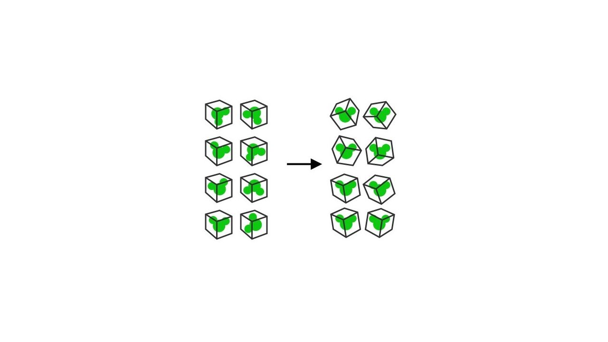
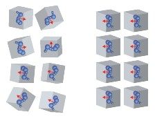
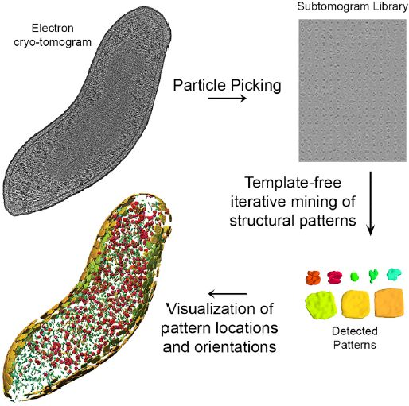
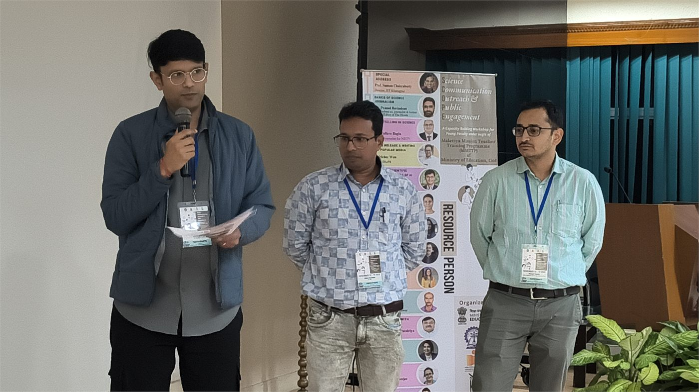
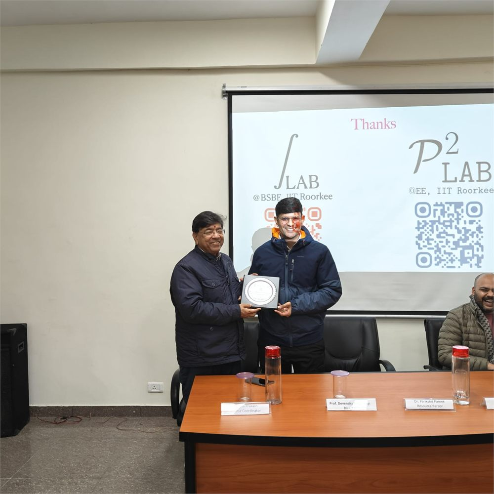
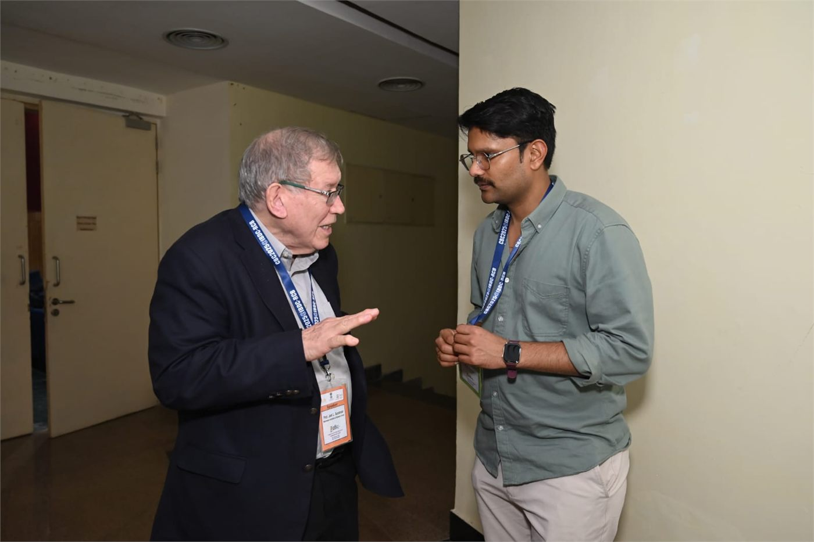
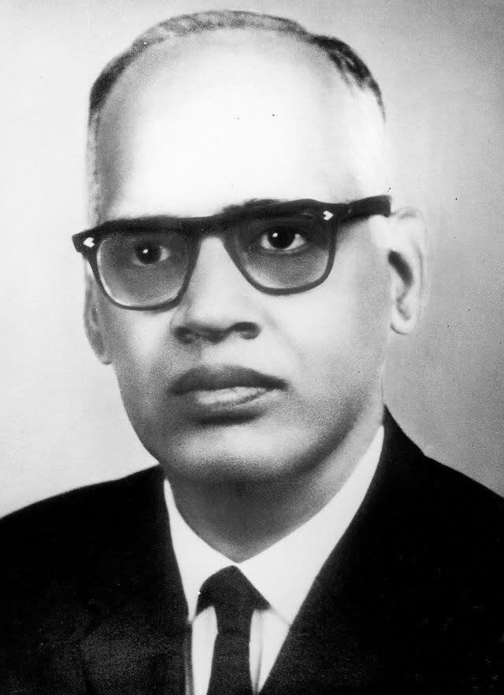
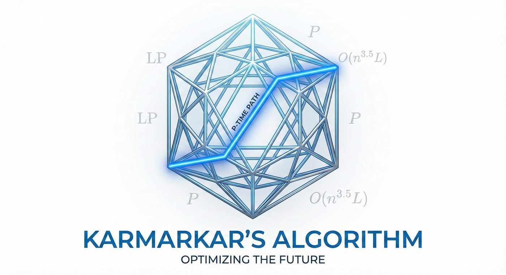

Gallery
Figures & moments
Figures from our work, and moments from the road.

Mitochondrial network
Segmented mitochondrial network reconstructed from a soft X-ray tomogram.

Cryo-electron tomography
Cellular structure resolved at molecular scale.

Subtomogram alignment
Aligning and clustering 3D subtomograms to recover repeated structure.

A visual design language
Tetrahedral building blocks composing insulin — from the World in a Cell design language.

Subtomogram averaging
Averaging across particles to lift signal out of noise.

Template-free discovery
Pattern mining across heterogeneous particle sets.

Non-invasive bilirubin sensing
Smartphone-based estimation for neonatal jaundice screening.

SCOPE workshop, IIT Kharagpur
Capacity building in science communication and public engagement, November 2025.

MMTTC, HNB Garhwal University
Faculty Development Programme on AI in higher education, December 2025.

With Prof. Joel L. Sussman
Computational Biology Conference 2025, RCB Faridabad.

G. N. Ramachandran
On the lab wall — the plot that named a field.

Karmarkar's algorithm
Interior-point methods, drawn out.